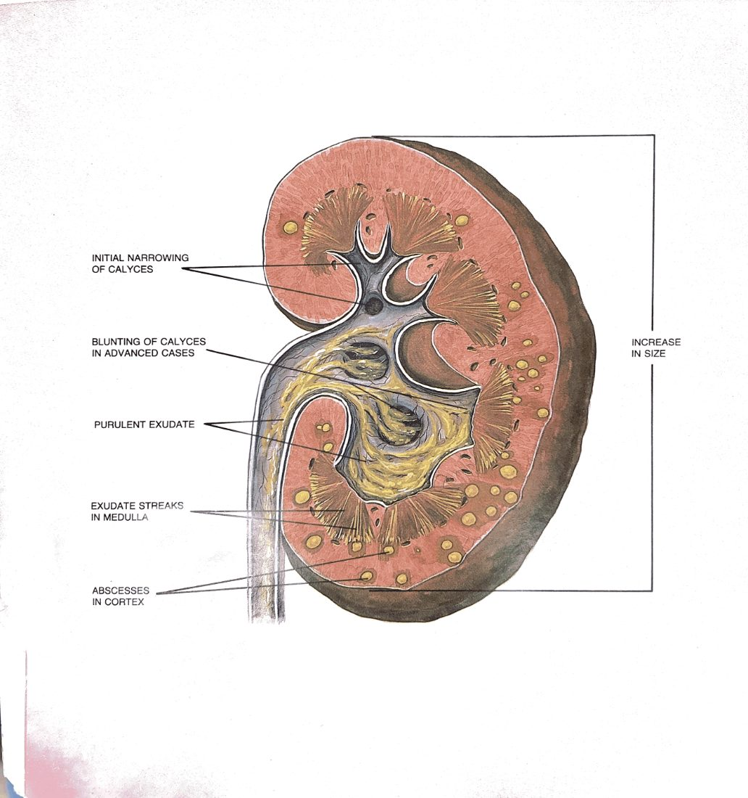

For PA students and new learners taking first call. The emergency room (ER) sees the symptom where it shows up. Your job is to find where along the urinary tract the flow first broke down, and to know which consults can't wait for the workup to finish.
Think through every urology consult in four steps: what the patient says → what's not working → what's physically wrong → why it happened. (These are steps of reasoning, not the five anatomical stations of the urinary tract.) Each step usually falls to a different person:
| Step | Examples | Who usually gets there |
|---|---|---|
| 1 — What the patient says | "Can't pee" · "Blood in urine" · "Pain" · "Fever" | Triage nurse, ER attending |
| 2 — What's not working | Retention (bladder won't empty). Blocked flow. Leaking (loss of continence). Unstable blood pressure and heart rate. | ER physician |
| 3 — What's physically wrong | Stone where the ureter enters the bladder (ureterovesical junction, UVJ). Enlarged prostate. Clot in the bladder. Testis with no blood supply. | You — on consult |
| 4 — Why it happened | Benign prostatic hyperplasia (BPH). Blood thinners. Bladder cancer. Twisted spermatic cord. Diabetes. | Urology, later on |
Example: a man says "I can't pee" (step 1). His bladder is full and won't empty (step 2). His prostate is blocking the outlet (step 3). Years of prostate growth plus new opioids tipped him over (step 4). The ER doctor heard step 1 and worked out step 2. They called you to find step 3, the place along the urinary tract where flow first broke down, and to start planning for step 4. That is the whole consult.
You are trusted to do three things, in this order. One, spot the patients who can't wait for the workup: Fournier's gangrene, testicular torsion, and urosepsis with a blocked kidney. Two, stabilize: drain what's swollen with trapped urine, unblock what's blocked, press on what's bleeding. Three, find the problem (the station of the urinary tract that failed first) well enough that the staff urologist can plan the operation by phone. The four steps help you do these in the right order every time.
Every consult below is laid out the same way. The coloured badge says how urgent it is. The line beside it says how fast it gets worse, so you know if the workup can finish before you must act. Two boxes then say where the problem is and where the patient feels it, before the details start.
Then: How it looks · Workup · Treatment · When to call urology.
Two kinds. Obstructive retention: a slowly narrowed outlet (BPH, urethral stricture) suddenly can't cope. Something usually tips it over: alcohol, anticholinergics, decongestants, opioids, or recent surgery. History of a slow stream. Big bladder, big post-void residual (PVR, urine left after voiding). Neurogenic retention: think spinal cord: cauda equina, spinal cord injury, multiple sclerosis (MS) flare, diabetic autonomic neuropathy. Look for saddle numbness, leg weakness, bowel changes, recent back pain. Acute on chronic is the most common ER picture: a man with years of lower urinary tract symptoms (LUTS) who suddenly can't void after a hip replacement and a few opioids.
Bladder scan first. Over 300 mL (local thresholds vary) in a patient who can't void is retention. Drain with a Foley catheter before you finish the workup. Urinalysis (UA) + basic metabolic panel (BMP). Renal ultrasound if you suspect both kidneys are swollen (bilateral hydronephrosis) or creatinine is up. Always ask the nerve questions out loud: saddle numbness, legs, bowel, back pain. If any are positive, order an MRI of the lumbar spine STAT, not a urology consult.
The Foley drains the bladder (station 3) and takes back-pressure off the ureters (station 2). Start tamsulosin right away if the outlet is blocked; it makes the later trial without a catheter more likely to work. Watch for post-obstructive diuresis, a surge of urine once the blockage is relieved (urine output >200 mL/hr for 2 consecutive hours, or >3 L in 24 hours, after decompression): replace half of each hour's output with IV fluids, recheck electrolytes. Trial of void in 3–7 days as an outpatient if stable.
Sudden, severe pain that comes in waves (colic). The patient can't find a comfortable position, unlike peritonitis, where they lie still. Blood seen only on testing (microscopic hematuria) is common; visible (gross) hematuria is possible. Nausea and vomiting are prominent. Pain moving toward the groin or scrotum suggests the stone has moved down to the UVJ.
Non-contrast CT of the kidneys, ureters and bladder (CT KUB) is the test. It shows the stone, any swelling of the kidney (hydronephrosis), and other causes (abdominal aortic aneurysm, appendicitis). UA looking for blood and infection. Complete blood count (CBC) + BMP. If pregnant: ultrasound first, then MRI if needed; CT is the last resort. See Stones in Pregnancy for the trimester-by-trimester plan.
Ask when in the stream the blood appears; there are three patterns. Initial hematuria (blood at the start, then clearing) → urethra. Terminal hematuria (clear, then blood at the end) → bladder neck / trigone (base of the bladder). Total hematuria (blood throughout) → bladder or upper tract (kidney, ureter). Painless visible blood in an adult's urine is cancer until proven otherwise. Painful visible blood is usually a stone or infection. Blood thinners don't cause hematuria by themselves; they reveal a problem that was already there. Work it up the same way either way.
UA + culture (rule out infection first; if positive, treat it, then reassess). CBC, BMP, clotting tests (coags). CT urogram for the kidneys, ureters and bladder. Cystoscopy (a camera into the bladder) to see the bladder lining: flexible, in clinic, the gold standard for finding bladder cancer. Check for clot retention at the bedside: feel above the pubic bone, bladder scan if unsure.
If no clot retention and stable: outpatient workup. If clots are blocking the bladder: 3-way Foley (22–24 French (Fr), large bore) with continuous bladder irrigation (CBI). Wash out the clots by hand with a Toomey syringe before starting CBI; running CBI into a bladder full of clot just blows it up. Reverse blood thinners if the bleeding is significant. Type and screen; transfuse for anemia that causes symptoms.
Fever + flank pain + hydronephrosis = kidney infection behind a blockage (obstructed pyelonephritis) until proven otherwise. At-risk groups: diabetic, immunosuppressed, elderly, a recent scope or catheter, or a known stone. They can look surprisingly well one hour and crash the next. An infected, blocked kidney is an infection in a closed space. Antibiotics alone won't drain it. The pressure has to come off.

Lactate, blood cultures, UA + urine culture, CBC, BMP, coags. CT abdomen/pelvis with contrast (or non-contrast if AKI) to find the blockage. Sepsis bundle: fluids, broad-spectrum antibiotics, control of the source. Don't wait for cultures to start antibiotics, but know that antibiotics are the second step, not the first.
Antibiotics won't work until it's drained. Two options:
The choice depends on your hospital: whoever can drain it faster. Both work. The wrong answer is "let's see if the antibiotics work."
Always, right away, at the same time as calling IR. If the picture is clear enough, this is the consult where you call before the CT result is back. Expect ICU admission.
Pain much worse than the exam in the perineum, scrotum or groin, especially in a diabetic, obese or immunosuppressed patient, is Fournier's until proven otherwise. The skin changes show up hours after the deeper tissue starts dying. Crepitus (crackling gas under the skin) is late. Unstable vital signs come later still. How fast the patient gets to surgery to cut away dead tissue (debridement) is the one factor linked to survival. Imaging delays the OR. Antibiotics don't reach dead tissue. Cut.
Who gets it: diabetic, immunosuppressed, heavy alcohol use, an abscess near the rectum, a recent perineal procedure, or a long-term catheter. Severe pain in the perineum or scrotum. Early on, the skin can look like cellulitis (pink, warm, swollen), then turns dusky, purple, blistered, and finally black. Crepitus is very specific but often absent. Foul-smelling, "dishwater" pus if the skin is open. Sicker than the skin suggests.
This is a bedside diagnosis. If you are sure, CT is a delay you can't afford. If you're unsure and the patient is stable, CT can show gas in the tissue layers and how far it has spread, but a normal CT doesn't rule it out. The LRINEC score (a lab-based risk score for necrotizing fasciitis) supports the diagnosis but can't make it. Draw labs (CBC, BMP, lactate, CRP, glucose, coags) on the way to the OR.
Now. Before any of the above. Call urology and general surgery together: the debridement often crosses into both their areas.
Two types, totally different problems. Ischemic (low-flow, veno-occlusive): blood is trapped, so it acts like a compartment syndrome of the erectile chambers. Painful, fully rigid, dark blood when you draw it out (aspiration). Causes: sickle cell, leukemia, injections into the penis (intracavernosal), PDE5 inhibitors, trazodone, cocaine. Treat as an emergency. Non-ischemic (high-flow, arterial) follows perineal trauma. Partly rigid, painless, bright red blood on aspiration. Not an emergency: managed on a planned basis by blocking the artery (selective embolization).
History (sickle cell? trauma? drugs?). A blood gas from the erectile chamber (cavernosal blood gas) tells them apart: dark and acidotic = ischemic; bright and like arterial blood = non-ischemic. Doppler ultrasound confirms it if unsure.
Watch and wait at first. Many settle on their own. If it persists, block the leaking branch of the pudendal artery (selective embolization). Not a same-day procedure.
For any priapism >4 hours, call. If it's ischemic, you want urology at the bedside for the aspiration and injection. If it's non-ischemic, you still want them planning the embolization with IR.
Teen or young adult, sudden severe scrotal pain, often with nausea and vomiting. Sometimes wakes them from sleep. The testis sits high and lies sideways (transverse lie); the cremasteric reflex is absent. Lifting the testis doesn't ease the pain (Prehn's sign negative). In epididymitis lifting helps, but don't base the diagnosis on Prehn's sign alone. It can look atypical in younger children and adult men. Never bet against torsion when scrotal pain starts suddenly.
A bedside diagnosis. Doppler ultrasound shows reduced or absent blood flow to the testis, but don't delay surgery for an ultrasound if the picture is convincing. The clock starts when the cord twists, not when the patient arrives.
To the OR now: open the scrotum, untwist the cord, and fix both testes in place (bilateral orchiopexy). You can try untwisting by hand in the ED ("opening the book": rotate the affected testis outward, away from the midline) while the OR gets ready. It eases pain and may restore flow, but it doesn't replace the operation. Both sides are fixed because the other side has the same built-in weakness (bell-clapper deformity).
As soon as you suspect it. Nothing by mouth (NPO); book the patient for the OR. The testis is saved in >90% at <6 hours, <10% at >24 hours. The consult is not "rule out torsion"; it's "this is torsion until urology rules it out in the OR."
Blunt: usually a motor vehicle collision, sports impact or fall. Penetrating: gunshot or stab. The amount of blood in the urine does not match how bad the injury is; a major injury to the kidney's main vessels (renal pedicle) can cause very little. CT abdomen/pelvis with IV contrast (with a delayed phase to see the collecting system) grades the injury (AAST trauma grades I–V). Most blunt low-grade injuries (I–III) are managed without surgery. Contrast actively leaking (extravasation) or unstable vital signs → angio-embolization or OR. Watch for late bleeding from a pseudoaneurysm; keep a low threshold to readmit.
Pelvic fracture + visible hematuria = bladder injury until proven otherwise. CT cystogram (fill the bladder with contrast through a catheter, then scan) is the test, not a contrast CT alone, which can miss a rupture because the bladder isn't filled under pressure. Two patterns: extraperitoneal (leaks outside the abdominal cavity; most common, with pelvic fracture): Foley drainage 10–14 days, repeat cystogram before the catheter comes out. Intraperitoneal (leaks into the abdominal cavity; blunt trauma to a full bladder, classically a seatbelt injury): surgical repair. Always.
Blood at the meatus is a stop sign. Don't place a Foley until a urethral injury is ruled out. Two patterns: posterior (pelvic fracture; a "high-riding prostate" on digital rectal exam (DRE), though that finding is unreliable) → retrograde urethrogram (RUG); often managed with a suprapubic catheter and repair later. Anterior (straddle injury) → RUG; may be repaired right away or stented, depending on the injury.
Some bleeding is expected: pink urine, small clots, clearing over 24–48 hours. Bright red, heavy, or with clots the CBI can't keep up with is not expected. Turn up the irrigation, wash out clots by hand, check coags, and check the catheter balloon hasn't been pulled into the space where the prostate was (prostatic fossa), pressing in the wrong place. Bleeding that persists → back to the OR to cauterize (fulguration).
High drain output that smells like urine, or drain fluid creatinine much higher than blood (serum) creatinine, confirms a urine leak. Most heal with longer drainage and a ureteral stent to lower the pressure inside the kidney, so the leak can seal. A leak that persists → percutaneous nephrostomy + stent. Reoperation is rare.
Don't blindly put it back. Call urology. A catheter pushed through a fresh join (anastomosis) can tear it open. It often needs placing with a cystoscope over a wire. Treat this as a same-night call.
Stoma not draining. First: is the stoma alive (pink)? A dusky stoma means its blood supply is failing: an emergency. Then check the catheters in the conduit; a mucus plug is the usual cause. Flush the conduit catheters gently. If still no output, image the join between ureters and bowel (ureteroenteric anastomosis).
Think urine collection (urinoma), abscess, ureter injury. CT abdomen/pelvis with delayed images. The picture you don't want to miss is "a leaking join disguised as ileus."
Any unexpected finding in the first 30 days after a urologic operation goes to the surgeon who operated, not just to whoever is on for urology. That surgeon knows what they built and what should and shouldn't be happening.
The rule: how fast the problem gets worse decides how fast you move. If it will do harm before your workup can finish, act first and confirm later. If it's slower than that, image and plan.
For every consult, ask: will this do harm before my workup is finished? If yes → act now, confirm later. If no → confirm, then act. This one habit separates a useful first call from one that holds up the operation.
On first call you need rules, not judgment calls. Use these. They deliberately lean toward waking someone up.
When in doubt, call. The cost of an unnecessary call is one annoyed urologist. The cost of a missed Fournier's or torsion is a patient who loses tissue or dies. The two risks are not close. You will lose nothing in the long run by being the PA who called at 0300 about a possible torsion that turned out to be epididymitis. You will lose a lot by being the one who didn't.
Post-op day 1 (POD1) after a right total hip replacement (THA). 68-year-old man. Hasn't voided since the Foley came out 6 hours ago. The ER is involved because the floor team is unsure. The call comes to you.
The hospital stay is no longer about urology: orthopedics decides when he goes home, based on the hip. Urology's contribution is the bladder plan that travels home with him.
You did not need urodynamics. You did not need cystoscopy. You did not need to wake anyone up. You found what's physically wrong (the prostate, at the outlet, station 5), found the trigger (drugs acting on bladder control, station 4), relieved what wasn't working (retention, step 2), and handed off a plan that holds up after discharge. Most of your consults will look like this. The point of all the other entries in this document is so that you recognize the ones that don't — and call accordingly.
Written May 24, 2026 — for a PA student taking first call
The four steps first, so the cases make sense when they arrive.
From where the patient feels it to where the problem is. ← back to reference